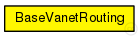
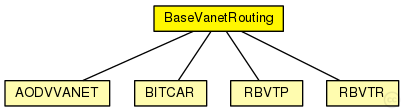

This documentation is released under the Creative Commons license
This documentation is released under the Creative Commons licenseBase module for vanet routing protocols
The following diagram shows usage relationships between types. Unresolved types are missing from the diagram. Click here to see the full picture.
The following diagram shows inheritance relationships for this type. Unresolved types are missing from the diagram. Click here to see the full picture.
| Name | Type | Description |
|---|---|---|
| AODVVANET | simple module | (no description) |
| BITCAR | simple module | (no description) |
| RBVTP | simple module | (no description) |
| RBVTR | simple module | (no description) |
| Name | Type | Default value | Description |
|---|---|---|---|
| excludedInterfaces | string | "" |
list of interfaces excluded by the vanet routing protocol |
| interfaces | string | "prefix(wlan)" |
list of routing interfaces were the routing protocol is active, the prefix(namei) indicate all the interfaces with "namei" in his names |
| useVanetLabelRouting | bool | true |
the routing entries are marked IPv4Route::MANET, this label force an exact search with independent of the mask |
| useICMP | bool | true |
By default the module use the ICMP but it's necessary to activate with the method setSendToICMP(true) |
| setICMPSourceAddress | bool | false |
set the datagram source address if the address is undefined to the address of node This parameter allow that the ICMP messages could arrive to the source applications |
| vanetPurgeRoutingTables | bool | true | |
| autoassignAddress | bool | false |
assign IP adresses automatically to the interfaces |
| autoassignAddressBase | string | "10.0.0.0" | |
| isStaticNode | bool | false |
| Name | Value | Description |
|---|---|---|
| display | i=block/routing |
// // Base module for vanet routing protocols // simple BaseVanetRouting { parameters: @display("i=block/routing"); string excludedInterfaces = default(""); // list of interfaces excluded by the vanet routing protocol string interfaces = default("prefix(wlan)"); // list of routing interfaces were the routing protocol is active, the // prefix(namei) indicate all the interfaces with "namei" in his names bool useVanetLabelRouting = default(true); // the routing entries are marked IPv4Route::MANET, this label force an exact search with independent of the mask bool useICMP = default(true); // By default the module use the ICMP but it's necessary to activate with the method setSendToICMP(true) bool setICMPSourceAddress = default(false); // set the datagram source address if the address is undefined to the address of node // This parameter allow that the ICMP messages could arrive to the source applications bool vanetPurgeRoutingTables = default(true); bool autoassignAddress = default(false); // assign IP adresses automatically to the interfaces string autoassignAddressBase = default("10.0.0.0"); bool isStaticNode = default(false); }
This documentation is released under the Creative Commons license